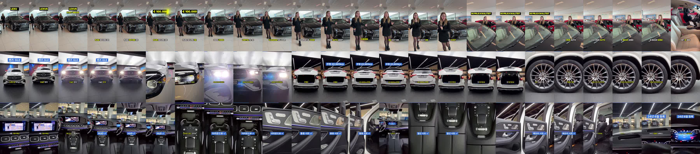

자동 편집 네덜란드판 시험 · 벤츠 GLE 450 4MATIC매물 정보 + 원본 영상 57초 → 사람 손 없이 대본·음성·장면 고르기·자막·칩·효과음까지 자동 (34초)
원본 네덜란드판과 나란히

원본에 맞춘 것
| 항목 | 원본 네덜란드판 | 이 영상 |
|---|---|---|
| 말 자막 | 한 줄 1~3낱말, 말하는 낱말 노랑, 글자 높이 약 48px | 한 줄 최대 11자·3어절, 말하는 낱말 노랑, 52px |
| 옵션 칩 | 자막 자리에서 그 낱말을 말하는 동안(약 1.3초), 겹치면 위로 2개, 상자 103~113px | 같은 방식 1.33초, 최대 2개, 상자 108px |
| 숫자 칩 | 화면 위쪽 약 22% | 22% |
| 첫 화면 | 브랜드 한 낱말 칩 약 2초 | 「벤츠 GLE」 2.2초 |
| 끝 화면 | 로고만 약 2초 | 보배드림 로고 2초 |
| 효과음 | 칩이 뜨는 순간 | 칩이 뜨는 순간 |
알아 둘 점
- 사실 근거: 연식·등록(24년 6월)·주행 20,885km·가솔린+전기·가격 7,990만원·옵션(HUD·어라운드뷰·통풍·열선·메모리 시트)은 매물 정보, 381마력은 공식 제원
- 음성: 일레븐랩스 eleven_v4 · Minho(30대 서울 남성), 숫자는 글로 쓴 그대로 읽힘
- 칩 색: 정해 둔 기준(파랑 #306BD9 · 흰 글자). 원본은 검정 상자 · 노랑 글자
- 음악 없음, 효과음은 보배드림 자체 효과음만
- 원본과 남은 차이: 화면 바뀜 22.9회/분(원본 위 끝 22.3), 원본은 진행자가 나오는 영상
- 번호판: 딜러 매물은 번호판 공개가 원칙이라 가리지 않음 · 테스트용 원본(내부 시험용), 외부 게시 전 권리 확인 필요